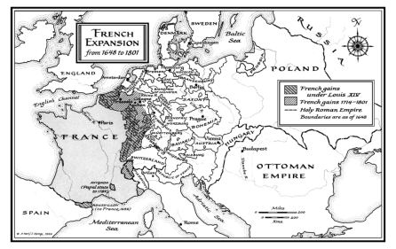
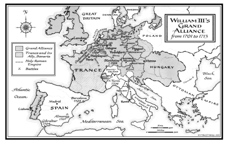
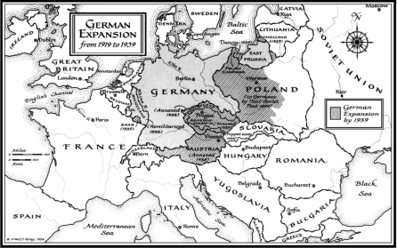
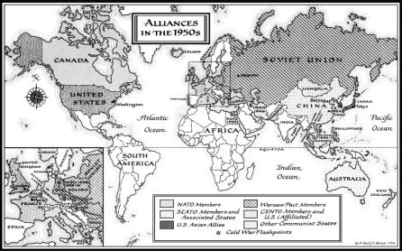
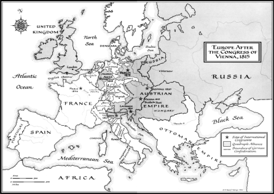

POWER VACUUMS Both the Peace of Westphalia (1648) and the Treaty of Versailles (1919) created power vacuums on the borders of military heavyweights. The stronger powers—Louis XIV’s France and Hitler’s Germany—found the temptation to expand at the expense of weaker neighbors irresistible.

CONTAINMENT OLD AND NEW In order to rein in chronically expansionist powers, William III of England built a “Grand Alliance” to “contain” France’s outward thrusts. The United States similarly built a system of alliances to contain the Soviet Union in the 1950s.

BALANCE OF POWER AND THE CONGRESS SYSTEM The peacemakers at Vienna consolidated Central Europe into the German Confederation, ending the power vacuum which had tempted French expansionism. The Quadruple Alliance was formed to block French aggression. European congresses, the last of which was held in Berlin in 1878, met periodically to sort out solutions to Europe’s major conflicts.